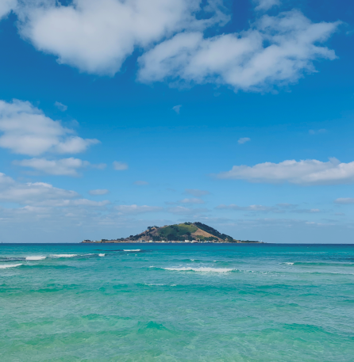

ContentArea
ABOUT JEJU
Bhondo and Jeju are different in nature, culture and language. Also, Jeju Island has a winding history. From the Three Kingdoms period through Korea and the Joseon Dynasty, Let's explore the history of Jeju until the turbulence of modern history.
Looking for JEJU Travel Information?
Please ask us anything about tourism in Jeju! In addition to Korean, we offer service in three other languages (English, Chinese, and Japanese) by telephone or in an online chat.
UNESCO
Jeju Island was designated a National Biosphere conservation area in 2002, a World Natural Heritage site in 2007, and received Global Geopark Network certification in 2010. It is the only area in the world that has achieved these three accolades at the time.
view more- Biosphere ReserveMunseom Island
- Munseom Island is located 1.3km south from Seogwipo Port. you can see an island that is floating on your left side.
- # Parents# Friends# Children
-
- World NaturalSeongsan
- Seongsan Ilchulbong Peak, which is 180m above sea level, erupted underwater in the ocean about 5,000 years agoz
- # Sunrise# Volcanic Cones# Landscapes
-
- Intangible CulturalHaenyeo Museum
- Seeing from the shell mound, it is safe to assume that the history of Haenyeo goes back to B.C.
- # Indoors# Cultural Sites
-
- Global GeoparkYongmeori Coast
- The Yongmeori Coast got its name because the beach looks like a dragon that is jumping into the ocean.
- # Seaside# Rest/Healing# Parents
-
- Biosphere ReserveHallasan Mountain
- In light of the current situation regarding COVID-19 and fewer visitors to Jeju.
- # Mountains# On Foot# Landscapes
SPECIAL
Jeju Island is divided into six areas: tourism, scenic beauty, specialty products, local food, experience, roads, and buildings. Luxury goods selected by field will be remembered as a speciality that anyone who visits Jeju Island, Treasure Island, must experience.
view more-
- Seopjikoji Chotdaebawi
Scenic sceneThe 7 sceneries - Seopjikoji is a place where tourists are crowded due to the influence of the drama All-in.
- Seopjikoji Chotdaebawi
-
- Meat noodles
Local foodThe 7 local foods - Meat noodles are a food that I enjoyed eating on the day of a village feast or a big event.
- Meat noodles
- Grape Hotel
ArchitectureThe 7 Architectures - It is made with the motif of Jeju's Oreum and thatched houses, and when viewed from the sky, it looks like a single grape.
-
- Tangerine
SpecialtiesThe 7 specialties - It is an alkaline food that is good for dieting and helps absorb calcium.
- Tangerine
-
- Woljeong-ri Coastal Road
RoadThe 7 roads - Woljeong-ri Coastal Road is a semicircular road along the emerald-colored Woljeong-ri beach in four seasons.
- Woljeong-ri Coastal Road
VIDEO
Jeju Island is awash in movement. From the swaying stocks of eulalia grass, to the twirling blades of the offshore wind turbines. People, too, are a big part of this active island, including its atmospheric flea markets, SNS stars touring Jeju, and even the posts of people documenting their latest Jeju culinary experiences.

GALLERY
-
insungyoonJeju-do, South Korea
-
Ryan YooJeju-do, South Korea
-
231 PROJECTJeju-do, South Korea
- 
Jieun LimJeju-do, South Korea
-
insungyoonJeju-do, South Korea
-
jaemin donJeju-do, South Korea
-
miram OhJeju-do, South Korea

insungyoonSeogwipo-si, Jeju-do, South Korea